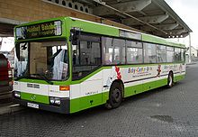

Domů
Druhý
Autobus
Autobus je motorové vozidlo určené pro přepravu většího počtu osob po silnici. Je poháněn většinou vznětovým motorem a je základním kamenem moderní hromadné dopravy osob, tedy od 50. let 20. století.

- autobusy městské – Jsou určené pro dopravu v intravilánu, mají velký počet dveří (3-4), více míst k stání + madla a tyče na držení za jízdy, jednodušší sedačky a jejich menší počet, místo pro kočárek. Od konce 80. let se objevují jako nízkopodlažní (anglicky označované jako low floor – LF), postupně budou všechna městská vozidla pouze nízkopodlažní (trend i nařízení Evropské unie). Standardem se také stává zavádění mnoha informačních systémů, světelných panelů a zvukových hlásičů). Technicky jsou navrženy pro velkou výměnu osob (3 dveře), výběr přepravného neprovádí řidič[zdroj?!] -(kromě výjimek) nahrazeno označováním jízdenek, nebo čipovými systémy; autobusy zvládají rychlejší rozjezdy a brzdění, většinou mají automatickou převodovku s retardérem, maximální rychlost bývá 75 km/h.[zdroj?!]
- autobusy příměstské (linkové, regionální) – Určeny pro provoz v blízkostech velkých měst nebo zajišťují dopravní obslužnost na venkově na úrovni okresů. Většinou jsou vybaveny manuální mechanickou převodovkou (úspora paliva, vyšší rychlost – většinou maximálně 90 km/h).[zdroj?!] Do autobusu se nastupuje předními dveřmi, jízdenky vydává (nebo kontroluje) řidič.[zdroj?!]
- low entry – (low entry = nízký vstup) Úplnou novinkou je řešení, které kombinuje městský nízkopodlažní a příměstský středně podlažní autobus. Jsou určené pro obsluhu blízkého okolí velkých měst. Mají více sedadel a přitom snížený vstup (možnost přepravy invalidních osob), převodovku manuální či automatickou. Přední část autobusu je nízkopodlažní až po prostřední dveře, poté se podlaha zvedne na standardní středněpodlažní výšku. Výhodou tohoto řešení je nižší cena oproti nízkopodlažnímu autobusu. Tento typ autobusů bývá označován zkratkou LE, i když někteří výrobci (jako třeba český SOR) jej z marketingových důvodů označují jako částečně nízkopodlažní.
- autobusy meziměstské (dálkové) – Jsou to autobusy určené pro provoz na linkách mezi městy a obcemi, do vzdálenosti 150 až 200 km. Mají jedny nebo dvoje dveře a není v nich povoleno stání. Technicky jsou to autobusy pro vyšší rychlosti (100 km/h i více), mají výkonný motor a nejsou nikdy kloubové (často klasické 12metrové, nebo třínápravové 15metrové). Od roku 2002 mají předepsány nové dálkové autobusy taktéž bezpečnostní pásy jako v osobním automobilu. Některé bývají vybaveny záchodem, nápojovým automatem, přístroji na pouštění filmu a hudby a klimatizací. Dnes neexistuje ostrá hranice mezi dálkovými a turistickými autobusy (dříve byly turistické luxusnější, dnes se jim dálkové vyrovnaly).
- autokary (turistické autobusy) – Jsou určeny pro nelinkový provoz na střední a i dlouhé trasy, podle objednávek na zájezdech a jiných dlouhých trasách. Konstrukcí jsou shodné buďto s autobusy meziměstskými, nebo dálkovými. Často jsou navíc vybaveny záchodem, televizí a větším prostorem pro cestující a zavazadla. Mohou táhnout přívěs (na lodě, jízdní kola), nebo mít na zádi instalovanou skříň na lyže. ČESMAD Bohemia rozděluje turistické autobusy podle 32 kritérií do čtyř kategorií (autokar, výletní autokar, turistický autokar a luxusní turistický autokar), přičemž rozhodující pro zařazení je zejména standard pohodlí (výška, nastavitelnost a vzdálenost sedadel) a kapacita zavazadlového prostoru, zatímco další výbava (klimatizace, WC, videopřehrávač, ohřívač jídla) nemá na toto zařazení vliv a je pouze u vyšších kategorií doporučené; chladnička je vyžadována pro luxusní turistický autokar.[3][4]
- hotelbusy – Tyto autobusy jsou určené pro provoz na nejdelších trasách – často až 5000 km. Jedná se o speciální dálkové a většinou patrové autobusy, které mají uvnitř kuchyně, koupelnu a spací kóje s lůžky, případně sedačky, které je možné sklopit a přestavět na postele. Používají se velmi zřídka. Jejich variantou jsou různá obytná a většinou luxusní provedení, sloužící jako zázemí např. hudebním skupinám na turné. Přeprava spících cestujících je však v Evropě zakázána.
- autobusy školní – Jsou navrženy pro přepravu dětí, mají menší rozestupy mezi sedadly a mají řešen prostor pro školní brašny. Typickým představitelem je Karosa Récréo
| Veřejná a městská hromadná doprava |
| silniční |
omnibus |
autobus |
trolejbus |
| kolejová |
tramvaj |
metro |
železnice |
| vodní |
přívoz |